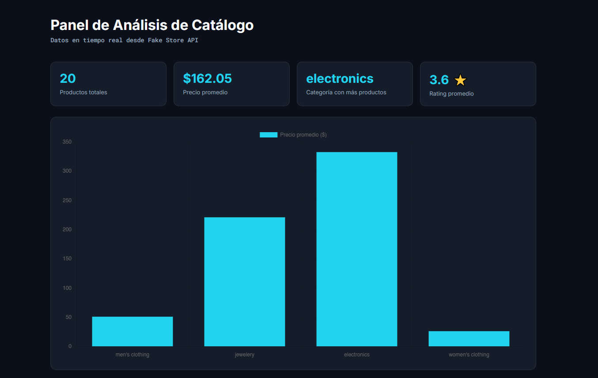

Entender el problema
Aclaro qué hay que resolver, para quién es y qué resultado se espera, antes de empezar a maquetar.
Desarrollo aplicaciones modernas, funcionales y responsive, integrando interfaces, datos y servicios para resolver necesidades reales de negocio.
Soy desarrollador web enfocado en Frontend, con experiencia construyendo aplicaciones modernas, funcionales y responsive.
Trabajo con JavaScript, Firebase y servicios externos para crear soluciones completas que integran interfaces, autenticación, persistencia de datos, APIs y flujos de pago.
También estoy ampliando mi perfil con formación en Análisis de Negocios, buscando combinar desarrollo tecnológico con una mejor comprensión de los problemas reales que una solución digital debe resolver.
Interfaces modernas, responsive y orientadas a producto.
Autenticación, bases de datos, APIs y servicios externos.
Soluciones pensadas para resolver necesidades reales.
Un recorrido corto: primero el problema, después la interfaz, después el código.
Aclaro qué hay que resolver, para quién es y qué resultado se espera, antes de empezar a maquetar.
Defino estructura, jerarquía visual y un recorrido simple en desktop y en mobile.
Desarrollo con HTML, CSS y JavaScript, integro servicios como Firebase, APIs o pagos, pruebo los flujos principales y ajusto la experiencia en desktop y mobile antes de publicar.

Aplicación web de comercio electrónico desarrollada con JavaScript, Firebase y servicios serverless. Incluye catálogo con búsqueda y filtros, carrito persistente, autenticación de usuarios, historial de compras y pagos integrados con Mercado Pago, con validación segura desde el backend mediante webhooks.

Dashboard interactivo orientado al análisis de datos, visualización de métricas y exploración de información mediante una interfaz clara y responsive.
Actualmente estoy abierto a oportunidades en desarrollo Frontend y proyectos web donde pueda seguir creciendo y aportar soluciones reales.